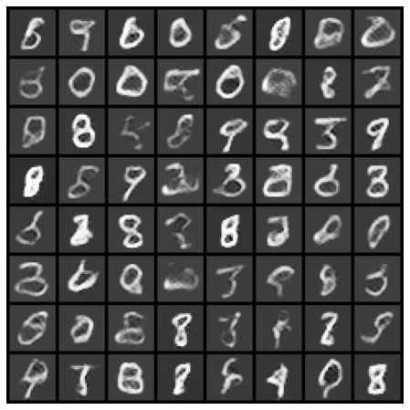

Previous Article: DCGAN - (4) Generator 구현
tensorflow tutorial에서 제시하는 Discriminator Architecture는 좀 더 간단하며, 총 세가지의 layer로 이루어져 있다. Generator와 다르게 크기를 줄여나가야 하므로 일반적인 convolutional layer를 사용한다. tensorflow에서의 code는 아래와 같다.
1 | def make_discriminator_model(): |
위 코드를 pytorch에서 구현해보자.
첫번째 layer에서는 28X28X1 image를 14X14X64 feature maps로 만든다. 이 때, parameter는 in_channel: 1, out_channel: 64, kernel_size: 5, stride: 2, padding: 2을 사용한다.
두번째 layer에서는 14X14X64 feature maps를 다시 7X7X128 feature maps로 만든다. parameter는 마찬가지로 in_channel: 64, out_channel: 128, kernel_size: 5, stride: 2, padding: 2을 사용한다.
마지막 layer에서는 7X7X128 feature maps를 scala로 만든다. 이 때, tensorflow에서는 Flatten 이후에 Dense(1)로 지정하면 바로 scala로 mapping해주지만, pytorch에서는 Flatten했을 때의 node 개수를 Linear(#node,1)의 형태로 지정해줘야 한다. 구현한 pytorch 코드는 아래와 같다.
1 | class Discriminator(nn.Module): |
이렇게 설정을 마친 후에 학습을 진행하게 되면 다음과 같은 images가 생성됨을 확인할 수 있었다.

다소 Blur된 부분도 보이고, 부정확한 숫자도 보이지만 숫자스러운(?) 모양이 나타났다는 것에 의의를 두도록 하겠다. 이 GAN모델은 첫번째 글에서 언급한대로 두 분포